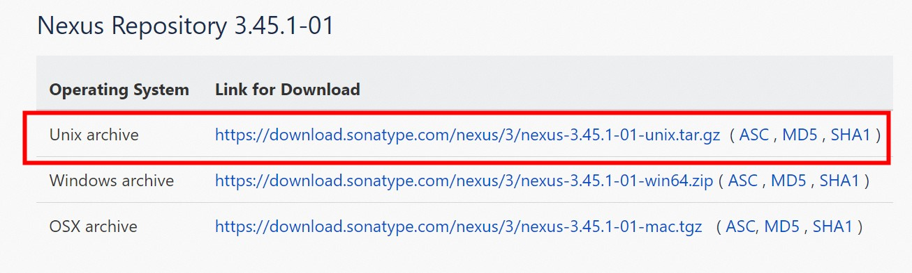

Android私有仓库搭建教程
服务器私有仓库，主要解决了下面两个问题：
- 对于安全性要求较高的公司（如银行），内外网隔离，开发人员访问外网成本太大。导致无法下载 Android 工程的依赖包。这时可通过 私有仓库 去代理 公网仓库，便捷的下载依赖包。
- 分享组件！抽取出公用代码封装为组件，发布到仓库。项目组件化开发、统一框架、统一某些功能，提高了效率。方便团队管理，也利于团队成员的配合。
一、服务器部署仓库
在服务器部署私有仓库，需要在服务器上安装3个软件： JDK、Maven、Nexus OSS。 通过 Nexus 软件来对我们的仓库进行 增删改查。
1.1、安装jdk
1、查找jdk
查看yum库中都有哪些jdk版本，输入命令：yum search java | grep jdk
2、使用yum命令安装，这里选择jdk8,64位的压缩包
输入命令 yum install java-1.8.0-openjdk ，中途提示 “Is this ok [y/d/N]:” 输入y，回车。 安装完之后，默认的安装目录是在: /usr/lib/jvm/java-1.8.0-openjdk-1.8.0.171.x86_64
3、验证是否成功
输入命令 java -version，能正常显示版本信息即为安装成功。
4、设置环境变量
配置JAVA_HOME。参考这篇博客：https://blog.csdn.net/qq_43491705/article/details/111354584
1.2、安装Maven
1、下载Maven安装包
使用 wget https://mirrors.aliyun.com/apache/maven/maven-3/3.6.2/binaries/apache-maven-3.6.2-bin.tar.gz 命令下载，该命令通过阿里巴巴镜像下载，速度还可以。
2、解压缩Maven
tar -zvxf apache-maven-3.6.2-bin.tar.gz3、配置Maven环境变量
vi /etc/profile添加环境变量 export MAVEN_HOME=/var/local/apache-maven-3.6.2 export MAVEN_HOME export PATH=$PATH:$MAVEN_HOME/bin "var/local/apache-maven-3.6.2"，要替换为自己的maven的安装目录
编辑之后记得使用 source /etc/profile 命令使改动生效。
4、验证是否成功
在任意路径下执行 mvn -version 命令。maven 安装成功，能够看到当前maven及jdk版本。
1.3、安装Nexus
1、下载Nexus
通过官网下载： https://help.sonatype.com/repomanager3/product-information/download/download-archives---repository-manager-3。 需要翻墙，不能翻墙的同学，请通过其他途径寻找资源。
2、部署到服务器
上传 Nexus 安装包到服务器并解压。上传包到服务器的方式多种多样，我这里是先把包上传到github，再通过 wget 命令下载到服务器。
进入压缩包所在目录，通过 tar -zvxf nexus-3.45.1-01-unix.tar.gz 命令解压。
3、启动Nexus
start命令启动（后台进程形式）。找到 Nexus 安装目录 进入 /bin 文件夹， 执行脚本命令 ./nexus start，以后台进程的形式（不占用当前命令终端窗口）启动 Nexus 服务， 启动需要等待一段时间。
4、验证是否安装成功
在浏览器访问 Nexus 的 Web 端首页，输入服务器ip:8081。出现如下界面表示 Nexus 安装成功！
二、Nexus配置及使用
2.1、Nexus登录
在浏览器访问 Nexus 的 Web 端首页，输入服务器ip:8081。点击右上角 sign in 按钮，登录。
输入用户名和密码。默认配置的账号（admin），密码在可以在 sonatype-work/nexus3 目录下 的admin.password 文件中查看初始化密码。
首次登录成功之后，会要求我们重置密码，新密码要记录下来。不要忘记。重置密码很麻烦！
2.2、Nexus使用——代理仓库
当开发过程中无法直接访问公网仓库下载依赖时，可以通过代理仓库，间接去下载公网依赖。点击下图中的按钮，创建一个代理仓库。
选择 maven2（proxy）
输入仓库的名字和 要访问的公网Url，其他设置一般默认即可。点击确定创建完成。在Repositories 页面可以看到我们刚创建的代理仓库。
在 Repositories 页面点击 copy 按钮,会显示该仓库在自己服务器的地址。
在Android studio project 的根 build.gradle 文件添加我们的仓库地址。
这样当我们访问公网仓库时(例如google的maven仓库)，会先访问自己的服务器，通过服务器去访问公网仓库。AS 工程能正常编译和运行， 就表示我们的代理仓库创建成功了。
2.1、Nexus使用——组件仓库
当开发过程中当我们封装了一个组件，想要分享给团队里面的其他成员使用，可以创建一个组件仓库。
创建组件仓库
创建仓库的时候，选择maven2（hosted）。输入仓库的名字，点击确定。
上传组件

按照上图中的路径点击，打开下面的页面。
点击browse 选择我们生成的aar文件，注意 Extension、和 Packaging 输入aar。填写完信息，点击upload，仓库配置成功。
更新组件
更新组件的操作 同上传组件的流程 一模一样。在下图中的页面，可以查看各个版本的aar包。
使用组件
首先：在项目根目录的 build.gradle 中添加仓库地址
然后：在 app module 的 build.gradle 中添加仓库依赖。
依赖语句可在这个路径下查看。

重新编译工程，查看 groupId:artifactId:2.0.0 包中的api 是否可以正常使用，可以正常使用，表示组件仓库配置成功。
PS:Nexus 功能是很强大的，还有很多功能，这里没有介绍到。有兴趣的同学可以自己研究一下。